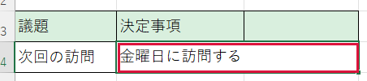

結合セルに文章を入力したい
① 作業用ファイルを作る

- 転記先のひな形を開き、F12 を押します。
- 新しい名前を入力して［保存］をクリックします。画面上部の名前を控えます。あとでこのファイルに戻ります。
② コピー元で文字を選ぶ


- 文章が書いてある元の議事録を開き、コピーしたい欄をクリックします。
- F2 を押して文字を編集する状態にします。上の数式バーで必要な文字を先頭から末尾までドラッグします。
- 文字だけに色が付いたら Ctrl＋C を押します。Esc を押してコピー元の編集を終えます。
③ 貼り付け先に入れる

- 手順①で控えた名前のファイルに戻ります。
- 転記先の欄をクリックして F2 を押します。縦線が出た位置に文字が入ります。
- Ctrl＋V を押します。文章が合っていれば Enter で確定します。確定前に取り消すには Esc を押します。
できたか確認
転記した文章が読めて、欄の幅と罫線が元のままなら完了です。
欄全体をコピーすると止まる理由
複数のマスを一つにまとめた欄を「結合セル」と呼びます。セル全体をコピーすると、元と先の範囲の形が合わず貼れない場合があります。編集できない場合は結合を解除せず、表示されたエラーから確認してください。